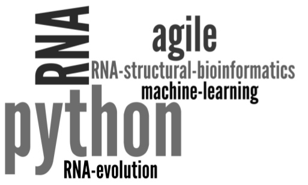

Marcin Magnus PhD

The interesting discovery: #inprogress
My area of interest is structural bioinformatics: development of new methods and application of existing ones.
Citations (date: 160618): 91, H-index: 7 GoogleScholar | ResearchGate | Mendeley
Science
Publications
10. RNA DCA... #inprogress
9. RNA SAM III... #inprogress
8. RNA Puzzle III #inprogress
7. Evolution-based 3D RNA structure modeling #inprogress
6. mqapRNA + experimental data #inprogress
5. Magnus M#, Boniecki M#, Dawson W, Bujnicki JM (2016) SimRNAweb: a web server for RNA 3D structure modeling with restraints
Nucleic Acids Research | SimRNAweb
4. Tuszynska I, Magnus M, Jonak K, Dawson W, Bujnicki JM (2015) NPDock: a web server for protein-nucleic acid docking. Nucleic Acids Research | NPDdock
3. Miao Z, Adamiak RW, Blanchet MF, Boniecki M, Bujnicki JM, Chen SJ, Cheng C, Chojnowski G, Chou FC, Cordero P, Cruz JA, Ferré-D'Amaré AR, Das R, Ding F, Dokholyan NV, Dunin-Horkawicz S, Kladwang W, Krokhotin A, Lach G, Magnus M, Major F, Mann TH, Masquida B, Matelska D, Meyer M, Peselis A, Popenda M, Purzycka KJ, Serganov A, Stasiewicz J, Szachniuk M, Tandon A, Tian S, Wang J, Xiao Y, Xu X, Zhang J, Zhao P, Zok T, Westhof E. (2015) RNA-Puzzles Round II: Assessment of RNA structure prediction programs applied to three large RNA structures RNA | RNA Puzzle
2. Korneta I, Magnus M, Bujnicki JM (2012) Structural Bioinformatics of the Human Spliceosomal Poteome, Nucleic Acids Research | SpliProt3D/p>
1. Magnus M, Pawlowski M, Bujnicki JM (2012) MetaLocGramN: a meta-predictor of protein subcellular localization for Gram-negative bacteria, BBA - Proteins and Proteomics | MetaLocGramN
Reviews
2. Magnus M#, Matelska D#, Łach G, Chojnowski G, Boniecki MJ, Purta E, Dawson W, Dunin-Horkawicz S, Bujnicki JM (2014)
Computational modeling of RNA 3D structures, with the aid of experimental restraints, RNA biology
1. Tuszynska I, Matelska D, Magnus M, Chojnowski G, Kasprzak JM, Kozlowski LP, Dunin-Horkawicz S, Bujnicki JM (2013) Computational modeling of protein-RNA complex structures, Methods
Book chapters
3. Bharat M, Kasprzak J, Tuszynska I, Magnus M, Szczepaniak K, Dawson W, Bujnicki JM (2015) Modeling of protein-RNA complex structures using computational docking methods
2. Piatkowski P, Kumar D, Kasprzak JM, Magnus M, Chojnowski G, Bujnicki JM (2015) RNA 3D Structure by Combination of Template-Based and Template-Free Modeling with ModeRNA and SimRNA
1. Kozlowski M, Starega-Roslan J, Legacz M, Magnus M, Krzyzosiak WJ (2008) Structures of MicroRNA Precursors, Current Perspectives in
microRNAs (miRNA) Shao-Yao Ying
# The authors wish it to be known that the two first authors should be regarded as joint first authors
Skills
Biostructural bioinformatics
RNA 3D modeling PROTEIN: protein sequence searching, protein interface prediction, the effect of mutations on protein stability predicting, protein 3D prediction with ROSETTA, MODELLER, SWISS-MODEL, protein model quality assessment with MetaMQAPII;
RNA: secondary structure prediction (based on single sequence or alignment), RNA sequence alignment, RNA searching (sequence and
covariance model) and clustering, motif detection (rmdetect), RNA structure analysis (x3dna, rnaview, Mc-Annotate), RNA molecular dynamics with
Zephyr/OpenMM, and RNA 3D prediction: RNAkb, NAST, FARNA, DMD/iFoldRNA, RNAComposer, MC-Fold|MC-Sym, ModeRNA and SimRNA
RNA-protein complex: RNPdock/DARS-RNP
SciSoftDev
Python C++ Lisp
Programming in Python (expert), C++ (basic), agile software development (testing/source code controlling/quick releasing) with Python & Git, bash scripting, database design and development with MySQL & SQLite, web development with Django/jQuery/HTML/CSS/Apache/Bootstrap, server and client in SOAP, PyMOL plugin programming, Github & Travis CI
Statistical skills
Machine Learning with Python/R Statistical analysis of biological data with R, machine learning algorithms (support vector machine, random forest, neural networks, generalized linear models) in R and scikit
Workshops & Courses
RNA bioinformatics
NGS Data Analysis, RNAseq, ChIPseq, Oeiras, Portugal, 2016
RNA Bioinformatics, Oeiras, Portugal, 2012
EMBO Practical Course on Computational RNA Biology, Corsica, France, 2010
SciSoftDev
Advanced Scientific Programming in Python, a Summer School by the G-Node and the Faculty of Electrical Engineering, Mechanical Engineering and Naval Architecture (FESB), Split, Croatia, 2014
Statistics
Data Mining with Weka Waikato Course #inprogress 2015
Introduction to Programming with MATLAB Coursera #inprogress 2015
Machine Learning Coursera #inprogress 2014
Practical Machine Learning Coursera #inprogress 2014
Regression Models Coursera #inprogress 2014
Computing for Data Analysis
Coursera with Statement of Accomplishment
2013
Data Analysis
Coursera with Statement of Accomplishment
2013
SoftSkills
Learning How to Learn Coursera, Passed with distinction (96.4%) 2014
EMBO YIP PhD Course, EMBL in Heidelberg, Germany, 2012
Scientific Communication by prof. Edward Potworowski, Warszawa, Poland, 2011
The Craft of Scientific Writing (Beginner and Intermediate Level) by prof. Jean-Luc Lebrun, Warszawa, Poland, 2012
Conferences
RNA Society Meeting 2016, Kyoto, Japan, 28.06-02.07, RNA 3D structure prediction using multiple sequence alignment information
RNA Society Meeting 2015, Wisconsin, USA, 26-31.06, (1) NPDock - a web server for protein-nucleic acid docking & (2) RNA-Puzzles: Critical assessment of RNA structure prediction
RNA Society Meeting 2014, Québec, Canada, 3-8.06, (1) Improved quality assessment of RNA 3D models & (2) RNA-Puzzles Round II: Assessment of RNA structure predic on of two large riboswitches